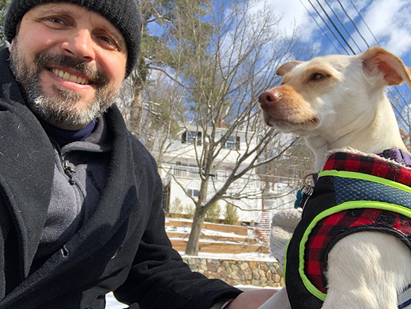

Matt Griffing
My name is Matt Grififng, and I live in Waltham, MA. I am a graphic designer, front-end developer, and photographer. I have had my own business for 11 years, and I have also worked part-time for the National Park Service and DS Solidworks. These days my web design projects usually involve modifying the CSS of existing WordPress themes. I'm interested in learning best practices, improving my workflow, and building a solid foundation from which to learn PHP. I have taken courses that touched on JavaScript and PHP, but I never gained enough momentum to keep up the practice. I find the concrete nature of programming a nice balance to the more subjective world of graphic design. I enjoy outdoor activities like cycling and skiing, but most days my exercise consists of walking my dog, Luna, - and playing chase with her.